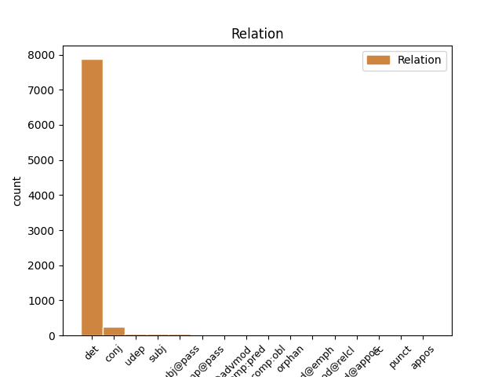
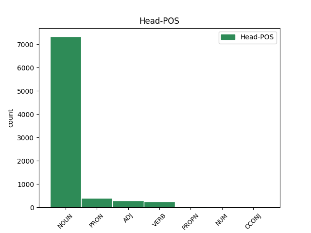
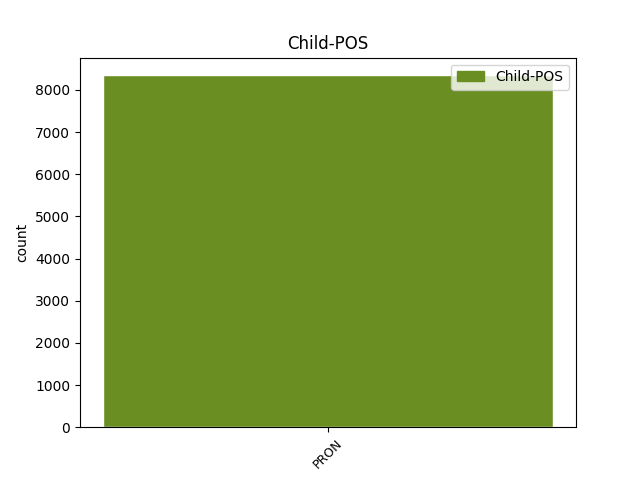

Distribution of features within this leaf



Agreement Rules sorted by frequency.
- When the dependent token is the determiner(det) of the head token, and the dependent token is PRON.
1 cum _ _ _ _ 0 _ _ _
2 enim _ _ _ _ 0 _ _ _
3 forma _ _ _ _ 0 _ _ _
4 sit _ _ _ _ 0 _ _ _
5 actus _ _ _ _ 0 _ _ _
6 , _ _ _ _ 0 _ _ _
7 materia _ _ _ _ 0 _ _ _
8 vero _ _ _ _ 0 _ _ _
9 sit _ _ _ _ 0 _ _ _
10 ens _ _ _ _ 0 _ _ _
11 in _ _ _ _ 0 _ _ _
12 potentia _ _ _ _ 0 _ _ _
13 tantum _ _ _ _ 0 _ _ _
14 ; _ _ _ _ 0 _ _ _
15 nullo _ _ _ _ 0 _ _ _
16 modo _ _ _ _ 0 _ _ _
17 id _ _ _ _ 0 _ _ _
18 quod _ _ _ _ 0 _ _ _
19 est _ _ _ _ 0 _ _ _
20 ex _ _ _ _ 0 _ _ _
21 materia _ _ _ _ 0 _ _ _
22 et _ _ _ _ 0 _ _ _
23 forma _ _ _ _ 0 _ _ _
24 compositum _ _ _ _ 0 _ _ _
25 , _ _ _ _ 0 _ _ _
26 potest _ _ _ _ 0 _ _ _
27 esse _ _ _ _ 0 _ _ _
28 alterius _ _ _ _ 0 _ _ _
29 forma _ _ _ _ 0 _ _ _
30 secundum _ _ _ _ 0 _ _ _
31 se se PRON F1|grn1|casD|gen3 Case=Acc|Degree=Pos|Gender=Neut|Number=Sing|PronType=Prs|Reflex=Yes 0 _ _ _
32 totum totus PRON F1|grn1|casD|gen3 Case=Acc|Degree=Pos|Gender=Neut|Number=Sing|PronType=Ind 31 det _ SpaceAfter=No
33 . _ _ _ _ 0 _ _ _
1 sicut _ _ _ _ 0 _ _ _
2 homo _ _ _ _ 0 _ _ _
3 perficitur _ _ _ _ 0 _ _ _
4 per _ _ _ _ 0 _ _ _
5 proprias _ _ _ _ 0 _ _ _
6 partes _ _ _ _ 0 _ _ _
7 et _ _ _ _ 0 _ _ _
8 formas _ _ _ _ 0 _ _ _
9 , _ _ _ _ 0 _ _ _
10 ornatur _ _ _ _ 0 _ _ _
11 autem _ _ _ _ 0 _ _ _
12 per _ _ _ _ 0 _ _ _
13 vestimenta vestimentum NOUN B1|grn1|casM|gen3 Case=Acc|Degree=Pos|Gender=Neut|Number=Plur 0 _ _ _
14 , _ _ _ _ 0 _ _ _
15 vel _ _ _ _ 0 _ _ _
16 aliquid aliquis PRON F1|grn1|casD|gen3 Case=Acc|Degree=Pos|Gender=Neut|Number=Sing|PronType=Ind 13 conj _ _
17 huiusmodi _ _ _ _ 0 _ _ _
18 . _ _ _ _ 0 _ _ _
1 lux _ _ _ _ 0 _ _ _
2 autem _ _ _ _ 0 _ _ _
3 non _ _ _ _ 0 _ _ _
4 est _ _ _ _ 0 _ _ _
5 forma _ _ _ _ 0 _ _ _
6 substantialis _ _ _ _ 0 _ _ _
7 aeris _ _ _ _ 0 _ _ _
8 , _ _ _ _ 0 _ _ _
9 alioquin _ _ _ _ 0 _ _ _
10 , _ _ _ _ 0 _ _ _
11 ea is PRON F1|grn1|casF|gen2 Case=Abl|Degree=Pos|Gender=Fem|Number=Sing|PronType=Dem,Prs 12 subj _ _
12 recedente recedo VERB L2|modD|tem1|grp1|casF|gen2 Case=Abl|Degree=Pos|Gender=Fem|Number=Sing|Tense=Pres|VerbForm=Part|Voice=Act 0 _ _ _
13 , _ _ _ _ 0 _ _ _
14 corrumperetur _ _ _ _ 0 _ _ _
15 . _ _ _ _ 0 _ _ _
1 unde _ _ _ _ 0 _ _ _
2 dionysius _ _ _ _ 0 _ _ _
3 dicit _ _ _ _ 0 _ _ _
4 , _ _ _ _ 0 _ _ _
5 quod _ _ _ _ 0 _ _ _
6 non _ _ _ _ 0 _ _ _
7 est _ _ _ _ 0 _ _ _
8 possibile _ _ _ _ 0 _ _ _
9 nobis _ _ _ _ 0 _ _ _
10 in _ _ _ _ 0 _ _ _
11 hac hic PRON F1|grn1|casF|gen2 Case=Abl|Degree=Pos|Gender=Fem|Number=Sing|PronType=Dem 12 udep _ _
12 vita vita NOUN A1|grn1|casF|gen2|vgr1 Case=Abl|Degree=Pos|Gender=Fem|Number=Sing 0 _ _ _
13 aliter _ _ _ _ 0 _ _ _
14 superlucere _ _ _ _ 0 _ _ _
15 divinum _ _ _ _ 0 _ _ _
16 radium _ _ _ _ 0 _ _ _
17 , _ _ _ _ 0 _ _ _
18 nisi _ _ _ _ 0 _ _ _
19 cum _ _ _ _ 0 _ _ _
20 varietate _ _ _ _ 0 _ _ _
21 sensibilium _ _ _ _ 0 _ _ _
22 formarum _ _ _ _ 0 _ _ _
23 : _ _ _ _ 0 _ _ _
1 et _ _ _ _ 0 _ _ _
2 ideo _ _ _ _ 0 _ _ _
3 alii _ _ _ _ 0 _ _ _
4 dicunt _ _ _ _ 0 _ _ _
5 , _ _ _ _ 0 _ _ _
6 et _ _ _ _ 0 _ _ _
7 melius _ _ _ _ 0 _ _ _
8 , _ _ _ _ 0 _ _ _
9 quod _ _ _ _ 0 _ _ _
10 christus _ _ _ _ 0 _ _ _
11 ea _ _ _ _ 0 _ _ _
12 semel _ _ _ _ 0 _ _ _
13 tantum _ _ _ _ 0 _ _ _
14 protulit _ _ _ _ 0 _ _ _
15 , _ _ _ _ 0 _ _ _
16 et _ _ _ _ 0 _ _ _
17 eis is PRON F1|grn1|casO|gen3|vgr1 Case=Abl|Degree=Pos|Gender=Neut|Number=Plur|PronType=Dem,Prs 19 subj@pass _ _
18 semel _ _ _ _ 0 _ _ _
19 prolatis profero VERB N2|modM|tem4|grp1|casO|gen3 Aspect=Perf|Case=Abl|Degree=Pos|Gender=Neut|Number=Plur|Tense=Past|VerbForm=Part|Voice=Pass 0 _ _ _
20 consecravit _ _ _ _ 0 _ _ _
21 , _ _ _ _ 0 _ _ _
22 et _ _ _ _ 0 _ _ _
23 formam _ _ _ _ 0 _ _ _
24 consecrandi _ _ _ _ 0 _ _ _
25 dedit _ _ _ _ 0 _ _ _
26 . _ _ _ _ 0 _ _ _
1 licet _ _ _ _ 0 _ _ _
2 enim _ _ _ _ 0 _ _ _
3 paternitas _ _ _ _ 0 _ _ _
4 ut _ _ _ _ 0 _ _ _
5 forma _ _ _ _ 0 _ _ _
6 patris _ _ _ _ 0 _ _ _
7 significetur _ _ _ _ 0 _ _ _
8 , _ _ _ _ 0 _ _ _
9 est _ _ _ _ 0 _ _ _
10 tamen _ _ _ _ 0 _ _ _
11 proprietas _ _ _ _ 0 _ _ _
12 personalis _ _ _ _ 0 _ _ _
13 , _ _ _ _ 0 _ _ _
14 habens habeo VERB K2|modD|tem1|grp1|casA|gen2 Case=Nom|Degree=Pos|Gender=Fem|Number=Sing|Tense=Pres|VerbForm=Part|Voice=Act 0 _ _ _
15 se se PRON F1|grn1|casD|gen2 Case=Acc|Degree=Pos|Gender=Fem|Number=Sing|PronType=Prs|Reflex=Yes 14 comp@pass _ _
16 ad _ _ _ _ 0 _ _ _
17 personam _ _ _ _ 0 _ _ _
18 patris _ _ _ _ 0 _ _ _
19 , _ _ _ _ 0 _ _ _
20 ut _ _ _ _ 0 _ _ _
21 forma _ _ _ _ 0 _ _ _
22 individualis _ _ _ _ 0 _ _ _
23 ad _ _ _ _ 0 _ _ _
24 aliquod _ _ _ _ 0 _ _ _
25 individuum _ _ _ _ 0 _ _ _
26 creatum _ _ _ _ 0 _ _ _
27 . _ _ _ _ 0 _ _ _
1 sicut _ _ _ _ 0 _ _ _
2 etiam _ _ _ _ 0 _ _ _
3 in _ _ _ _ 0 _ _ _
4 rebus _ _ _ _ 0 _ _ _
5 naturalibus _ _ _ _ 0 _ _ _
6 potest _ _ _ _ 0 _ _ _
7 assignari _ _ _ _ 0 _ _ _
8 ratio _ _ _ _ 0 _ _ _
9 , _ _ _ _ 0 _ _ _
10 cum _ _ _ _ 0 _ _ _
11 prima _ _ _ _ 0 _ _ _
12 materia materia NOUN A1|grn1|casA|gen2 Case=Nom|Degree=Pos|Gender=Fem|Number=Sing 0 _ _ _
13 tota totus PRON F1|grn1|casA|gen2 Case=Nom|Degree=Pos|Gender=Fem|Number=Sing|PronType=Ind 12 mod@advmod _ _
14 sit _ _ _ _ 0 _ _ _
15 in _ _ _ _ 0 _ _ _
16 se _ _ _ _ 0 _ _ _
17 uniformis _ _ _ _ 0 _ _ _
18 , _ _ _ _ 0 _ _ _
19 quare _ _ _ _ 0 _ _ _
20 una _ _ _ _ 0 _ _ _
21 pars _ _ _ _ 0 _ _ _
22 eius _ _ _ _ 0 _ _ _
23 est _ _ _ _ 0 _ _ _
24 sub _ _ _ _ 0 _ _ _
25 forma _ _ _ _ 0 _ _ _
26 ignis _ _ _ _ 0 _ _ _
27 , _ _ _ _ 0 _ _ _
28 et _ _ _ _ 0 _ _ _
29 alia _ _ _ _ 0 _ _ _
30 sub _ _ _ _ 0 _ _ _
31 forma _ _ _ _ 0 _ _ _
32 terrae _ _ _ _ 0 _ _ _
33 , _ _ _ _ 0 _ _ _
34 a _ _ _ _ 0 _ _ _
35 deo _ _ _ _ 0 _ _ _
36 in _ _ _ _ 0 _ _ _
37 principio _ _ _ _ 0 _ _ _
38 condita _ _ _ _ 0 _ _ _
39 , _ _ _ _ 0 _ _ _
40 ut _ _ _ _ 0 _ _ _
41 scilicet _ _ _ _ 0 _ _ _
42 sit _ _ _ _ 0 _ _ _
43 diversitas _ _ _ _ 0 _ _ _
44 specierum _ _ _ _ 0 _ _ _
45 in _ _ _ _ 0 _ _ _
46 rebus _ _ _ _ 0 _ _ _
47 naturalibus _ _ _ _ 0 _ _ _
48 . _ _ _ _ 0 _ _ _
1 praeterea _ _ _ _ 0 _ _ _
2 , _ _ _ _ 0 _ _ _
3 omne _ _ _ _ 0 _ _ _
4 quod _ _ _ _ 0 _ _ _
5 habet _ _ _ _ 0 _ _ _
6 formam _ _ _ _ 0 _ _ _
7 in _ _ _ _ 0 _ _ _
8 materia _ _ _ _ 0 _ _ _
9 , _ _ _ _ 0 _ _ _
10 potest _ _ _ _ 0 _ _ _
11 multiplicari _ _ _ _ 0 _ _ _
12 secundum _ _ _ _ 0 _ _ _
13 numerum _ _ _ _ 0 _ _ _
14 , _ _ _ _ 0 _ _ _
15 manente maneo VERB K2|modD|tem1|grp1|casF|gen2 Case=Abl|Degree=Pos|Gender=Fem|Number=Sing|Tense=Pres|VerbForm=Part|Voice=Act 0 _ _ _
16 eadem idem PRON F1|grn1|casF|gen2 Case=Abl|Degree=Pos|Gender=Fem|Number=Sing|PronType=Dem,Prs 15 comp:pred _ _
17 specie _ _ _ _ 0 _ _ _
18 , _ _ _ _ 0 _ _ _
19 quia _ _ _ _ 0 _ _ _
20 multiplicatio _ _ _ _ 0 _ _ _
21 secundum _ _ _ _ 0 _ _ _
22 numerum _ _ _ _ 0 _ _ _
23 est _ _ _ _ 0 _ _ _
24 ex _ _ _ _ 0 _ _ _
25 materia _ _ _ _ 0 _ _ _
26 . _ _ _ _ 0 _ _ _
1 illos _ _ _ _ 0 _ _ _
2 autem _ _ _ _ 0 _ _ _
3 quibus qui PRON F1|grn1|casL|gen1 Case=Dat|Degree=Pos|Gender=Masc|Number=Plur|PronType=Rel 10 comp:obl _ _
4 ab _ _ _ _ 0 _ _ _
5 aeterno _ _ _ _ 0 _ _ _
6 disposuit _ _ _ _ 0 _ _ _
7 se _ _ _ _ 0 _ _ _
8 gratiam _ _ _ _ 0 _ _ _
9 non _ _ _ _ 0 _ _ _
10 daturum do VERB J2|modD|tem3|grp1|casD|gen1 Case=Acc|Degree=Pos|Gender=Masc|Number=Sing|Tense=Fut|VerbForm=Part|Voice=Act 0 _ _ _
11 , _ _ _ _ 0 _ _ _
12 dicitur _ _ _ _ 0 _ _ _
13 reprobasse _ _ _ _ 0 _ _ _
14 , _ _ _ _ 0 _ _ _
15 vel _ _ _ _ 0 _ _ _
16 odio _ _ _ _ 0 _ _ _
17 habuisse _ _ _ _ 0 _ _ _
18 : _ _ _ _ 0 _ _ _
1 quod _ _ _ _ 0 _ _ _
2 autem _ _ _ _ 0 _ _ _
3 est _ _ _ _ 0 _ _ _
4 summum _ _ _ _ 0 _ _ _
5 bonum _ _ _ _ 0 _ _ _
6 , _ _ _ _ 0 _ _ _
7 est _ _ _ _ 0 _ _ _
8 per _ _ _ _ 0 _ _ _
9 se _ _ _ _ 0 _ _ _
10 bonum _ _ _ _ 0 _ _ _
11 : _ _ _ _ 0 _ _ _
12 quia _ _ _ _ 0 _ _ _
13 quod _ _ _ _ 0 _ _ _
14 per _ _ _ _ 0 _ _ _
15 se _ _ _ _ 0 _ _ _
16 bonum _ _ _ _ 0 _ _ _
17 est _ _ _ _ 0 _ _ _
18 , _ _ _ _ 0 _ _ _
19 melius _ _ _ _ 0 _ _ _
20 est _ _ _ _ 0 _ _ _
21 eo is PRON F1|grn1|casF|gen3 Case=Abl|Degree=Pos|Gender=Neut|Number=Sing|PronType=Dem,Prs 0 _ _ _
22 quod qui PRON F1|grn1|casA|gen3 Case=Nom|Degree=Pos|Gender=Neut|Number=Sing|PronType=Rel 21 orphan _ _
23 per _ _ _ _ 0 _ _ _
24 aliud _ _ _ _ 0 _ _ _
25 . _ _ _ _ 0 _ _ _
1 nam _ _ _ _ 0 _ _ _
2 , _ _ _ _ 0 _ _ _
3 sicut _ _ _ _ 0 _ _ _
4 in _ _ _ _ 0 _ _ _
5 secundo _ _ _ _ 0 _ _ _
6 probatur _ _ _ _ 0 _ _ _
7 , _ _ _ _ 0 _ _ _
8 nihil nihil PRON G1|casA|gen3|vgr1 Case=Nom|Gender=Neut|Number=Sing|PronType=Neg 0 _ _ _
9 esse _ _ _ _ 0 _ _ _
10 potest _ _ _ _ 0 _ _ _
11 quod qui PRON F1|grn1|casA|gen3 Case=Nom|Degree=Pos|Gender=Neut|Number=Sing|PronType=Rel 8 mod@relcl _ _
12 ab _ _ _ _ 0 _ _ _
13 ipso _ _ _ _ 0 _ _ _
14 non _ _ _ _ 0 _ _ _
15 habeat _ _ _ _ 0 _ _ _
16 esse _ _ _ _ 0 _ _ _
17 . _ _ _ _ 0 _ _ _
1 sequitur _ _ _ _ 0 _ _ _
2 autem _ _ _ _ 0 _ _ _
3 ultimus ultimus ADJ B1|grn3|casA|gen1 Case=Nom|Degree=Abs|Gender=Masc|Number=Sing 0 _ _ _
4 gradus _ _ _ _ 0 _ _ _
5 : _ _ _ _ 0 _ _ _
6 eorum is PRON F1|grn1|casK|gen1 Case=Gen|Degree=Pos|Gender=Masc|Number=Plur|PronType=Dem,Prs 3 mod@appos _ _
7 scilicet _ _ _ _ 0 _ _ _
8 qui _ _ _ _ 0 _ _ _
9 ea _ _ _ _ 0 _ _ _
10 quae _ _ _ _ 0 _ _ _
11 aliis _ _ _ _ 0 _ _ _
12 sunt _ _ _ _ 0 _ _ _
13 revelata _ _ _ _ 0 _ _ _
14 , _ _ _ _ 0 _ _ _
15 et _ _ _ _ 0 _ _ _
16 per _ _ _ _ 0 _ _ _
17 alios _ _ _ _ 0 _ _ _
18 interpretata _ _ _ _ 0 _ _ _
19 , _ _ _ _ 0 _ _ _
20 fideliter _ _ _ _ 0 _ _ _
21 credunt _ _ _ _ 0 _ _ _
22 . _ _ _ _ 0 _ _ _
1 formae forma NOUN A1|grn1|casJ|gen2|vgr1 Case=Nom|Degree=Pos|Gender=Fem|Number=Plur 0 _ _ _
2 enim _ _ _ _ 0 _ _ _
3 secundum _ _ _ _ 0 _ _ _
4 esse _ _ _ _ 0 _ _ _
5 a _ _ _ _ 0 _ _ _
6 materia _ _ _ _ 0 _ _ _
7 dependentes _ _ _ _ 0 _ _ _
8 non _ _ _ _ 0 _ _ _
9 ipsae ipse PRON F1|grn1|casJ|gen2 Case=Nom|Degree=Pos|Gender=Fem|Number=Plur|PronType=Dem,Prs 1 mod@emph _ _
10 proprie _ _ _ _ 0 _ _ _
11 habent _ _ _ _ 0 _ _ _
12 esse _ _ _ _ 0 _ _ _
13 , _ _ _ _ 0 _ _ _
14 sed _ _ _ _ 0 _ _ _
15 composita _ _ _ _ 0 _ _ _
16 per _ _ _ _ 0 _ _ _
17 ipsas _ _ _ _ 0 _ _ _
18 . _ _ _ _ 0 _ _ _
1 et _ _ _ _ 0 _ _ _
2 eodem _ _ _ _ 0 _ _ _
3 modo _ _ _ _ 0 _ _ _
4 corruptio _ _ _ _ 0 _ _ _
5 , _ _ _ _ 0 _ _ _
6 et _ _ _ _ 0 _ _ _
7 diminutio _ _ _ _ 0 _ _ _
8 , _ _ _ _ 0 _ _ _
9 et _ _ _ _ 0 _ _ _
10 omnis omnis PRON C1|grn1|casA|gen1 Case=Nom|Degree=Pos|Gender=Masc|Number=Sing|PronType=Ind 11 punct _ _
11 defectus defectus NOUN D1|grn1|casA|gen1 Case=Nom|Degree=Pos|Gender=Masc|Number=Sing 0 _ _ _
12 , _ _ _ _ 0 _ _ _
13 est _ _ _ _ 0 _ _ _
14 de _ _ _ _ 0 _ _ _
15 intentione _ _ _ _ 0 _ _ _
16 naturae _ _ _ _ 0 _ _ _
17 universalis _ _ _ _ 0 _ _ _
18 , _ _ _ _ 0 _ _ _
19 non _ _ _ _ 0 _ _ _
20 autem _ _ _ _ 0 _ _ _
21 naturae _ _ _ _ 0 _ _ _
22 particularis _ _ _ _ 0 _ _ _
23 : _ _ _ _ 0 _ _ _
Disagree Examples:
1 quod _ _ _ _ 0 _ _ _
2 patet _ _ _ _ 0 _ _ _
3 non _ _ _ _ 0 _ _ _
4 solum _ _ _ _ 0 _ _ _
5 ex _ _ _ _ 0 _ _ _
6 hoc _ _ _ _ 0 _ _ _
7 quod _ _ _ _ 0 _ _ _
8 est _ _ _ _ 0 _ _ _
9 operatio _ _ _ _ 0 _ _ _
10 subsistens _ _ _ _ 0 _ _ _
11 : _ _ _ _ 0 _ _ _
12 sed _ _ _ _ 0 _ _ _
13 quia _ _ _ _ 0 _ _ _
14 una _ _ _ _ 0 _ _ _
15 operatione _ _ _ _ 0 _ _ _
16 deus _ _ _ _ 0 _ _ _
17 seipsum seipse PRON F1|grn1|casD|gen1 Case=Acc|Degree=Pos|Gender=Masc|Number=Sing|PronType=Prs|Reflex=Yes 0 _ _ _
18 ita _ _ _ _ 0 _ _ _
19 perfecte _ _ _ _ 0 _ _ _
20 intelligit _ _ _ _ 0 _ _ _
21 sicut _ _ _ _ 0 _ _ _
22 est _ _ _ _ 0 _ _ _
23 , _ _ _ _ 0 _ _ _
24 et _ _ _ _ 0 _ _ _
25 omnia _ _ _ _ 0 _ _ _
26 alia alius PRON F1|grn1|casM|gen3 Case=Acc|Degree=Pos|Gender=Neut|Number=Plur|PronType=Ind 17 conj _ SpaceAfter=No
27 , _ _ _ _ 0 _ _ _
28 quae _ _ _ _ 0 _ _ _
29 sunt _ _ _ _ 0 _ _ _
30 et _ _ _ _ 0 _ _ _
31 quae _ _ _ _ 0 _ _ _
32 non _ _ _ _ 0 _ _ _
33 sunt _ _ _ _ 0 _ _ _
34 , _ _ _ _ 0 _ _ _
35 bona _ _ _ _ 0 _ _ _
36 et _ _ _ _ 0 _ _ _
37 mala _ _ _ _ 0 _ _ _
38 . _ _ _ _ 0 _ _ _
1 de _ _ _ _ 0 _ _ _
2 contemplativa _ _ _ _ 0 _ _ _
3 quidem _ _ _ _ 0 _ _ _
4 felicitate _ _ _ _ 0 _ _ _
5 , _ _ _ _ 0 _ _ _
6 habet _ _ _ _ 0 _ _ _
7 perfectissimam _ _ _ _ 0 _ _ _
8 sui se PRON F1|grn1|casB|gen2 Case=Gen|Degree=Pos|Gender=Fem|Number=Sing|PronType=Prs|Reflex=Yes 0 _ _ _
9 et _ _ _ _ 0 _ _ _
10 aliorum alius PRON F1|grn1|casK|gen3 Case=Gen|Degree=Pos|Gender=Neut|Number=Plur|PronType=Ind 8 conj _ _
11 perpetuam _ _ _ _ 0 _ _ _
12 considerationem _ _ _ _ 0 _ _ _
13 . _ _ _ _ 0 _ _ _
1 subiungit _ _ _ _ 0 _ _ _
2 vero _ _ _ _ 0 _ _ _
3 de _ _ _ _ 0 _ _ _
4 factionis _ _ _ _ 0 _ _ _
5 meditatione _ _ _ _ 0 _ _ _
6 , _ _ _ _ 0 _ _ _
7 cum _ _ _ _ 0 _ _ _
8 dicit _ _ _ _ 0 _ _ _
9 , _ _ _ _ 0 _ _ _
10 et _ _ _ _ 0 _ _ _
11 in _ _ _ _ 0 _ _ _
12 factis _ _ _ _ 0 _ _ _
13 manuum _ _ _ _ 0 _ _ _
14 tuarum _ _ _ _ 0 _ _ _
15 meditabar _ _ _ _ 0 _ _ _
16 : _ _ _ _ 0 _ _ _
17 ut _ _ _ _ 0 _ _ _
18 per _ _ _ _ 0 _ _ _
19 facta _ _ _ _ 0 _ _ _
20 manuum _ _ _ _ 0 _ _ _
21 ipsius _ _ _ _ 0 _ _ _
22 intelligamus _ _ _ _ 0 _ _ _
23 caelum _ _ _ _ 0 _ _ _
24 et _ _ _ _ 0 _ _ _
25 terram terra NOUN A1|grn1|casD|gen2 Case=Acc|Degree=Pos|Gender=Fem|Number=Sing 0 _ _ _
26 , _ _ _ _ 0 _ _ _
27 et _ _ _ _ 0 _ _ _
28 omnia omnis PRON C1|grn1|casM|gen3 Case=Acc|Degree=Pos|Gender=Neut|Number=Plur|PronType=Ind 25 conj _ _
29 quae _ _ _ _ 0 _ _ _
30 procedunt _ _ _ _ 0 _ _ _
31 in _ _ _ _ 0 _ _ _
32 esse _ _ _ _ 0 _ _ _
33 a _ _ _ _ 0 _ _ _
34 deo _ _ _ _ 0 _ _ _
35 sicut _ _ _ _ 0 _ _ _
36 ab _ _ _ _ 0 _ _ _
37 artifice _ _ _ _ 0 _ _ _
38 manufacta _ _ _ _ 0 _ _ _
39 procedunt _ _ _ _ 0 _ _ _
40 . _ _ _ _ 0 _ _ _
1 sic _ _ _ _ 0 _ _ _
2 enim _ _ _ _ 0 _ _ _
3 nec _ _ _ _ 0 _ _ _
4 naturalis _ _ _ _ 0 _ _ _
5 circa _ _ _ _ 0 _ _ _
6 lineam _ _ _ _ 0 _ _ _
7 illas _ _ _ _ 0 _ _ _
8 passiones _ _ _ _ 0 _ _ _
9 considerat _ _ _ _ 0 _ _ _
10 quas qui PRON F1|grn1|casM|gen2 Case=Acc|Degree=Pos|Gender=Fem|Number=Plur|PronType=Rel 11 orphan _ _
11 geometra geometer NOUN A1|grn1|casA|gen1 Case=Nom|Degree=Pos|Gender=Masc|Number=Sing 0 _ _ _
12 : _ _ _ _ 0 _ _ _
13 sed _ _ _ _ 0 _ _ _
14 solum _ _ _ _ 0 _ _ _
15 ea _ _ _ _ 0 _ _ _
16 quae _ _ _ _ 0 _ _ _
17 accidunt _ _ _ _ 0 _ _ _
18 sibi _ _ _ _ 0 _ _ _
19 inquantum _ _ _ _ 0 _ _ _
20 est _ _ _ _ 0 _ _ _
21 terminus _ _ _ _ 0 _ _ _
22 corporis _ _ _ _ 0 _ _ _
23 naturalis _ _ _ _ 0 _ _ _
24 . _ _ _ _ 0 _ _ _
1 sic _ _ _ _ 0 _ _ _
2 enim _ _ _ _ 0 _ _ _
3 nec _ _ _ _ 0 _ _ _
4 naturalis _ _ _ _ 0 _ _ _
5 circa _ _ _ _ 0 _ _ _
6 lineam _ _ _ _ 0 _ _ _
7 illas _ _ _ _ 0 _ _ _
8 passiones passio NOUN C1|grn1|casM|gen2 Case=Acc|Degree=Pos|Gender=Fem|Number=Plur 0 _ _ _
9 considerat _ _ _ _ 0 _ _ _
10 quas _ _ _ _ 0 _ _ _
11 geometra _ _ _ _ 0 _ _ _
12 : _ _ _ _ 0 _ _ _
13 sed _ _ _ _ 0 _ _ _
14 solum _ _ _ _ 0 _ _ _
15 ea is PRON F1|grn1|casM|gen3 Case=Acc|Degree=Pos|Gender=Neut|Number=Plur|PronType=Dem,Prs 8 conj _ _
16 quae _ _ _ _ 0 _ _ _
17 accidunt _ _ _ _ 0 _ _ _
18 sibi _ _ _ _ 0 _ _ _
19 inquantum _ _ _ _ 0 _ _ _
20 est _ _ _ _ 0 _ _ _
21 terminus _ _ _ _ 0 _ _ _
22 corporis _ _ _ _ 0 _ _ _
23 naturalis _ _ _ _ 0 _ _ _
24 . _ _ _ _ 0 _ _ _